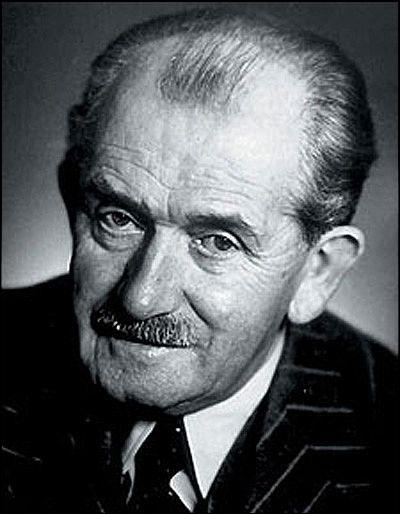
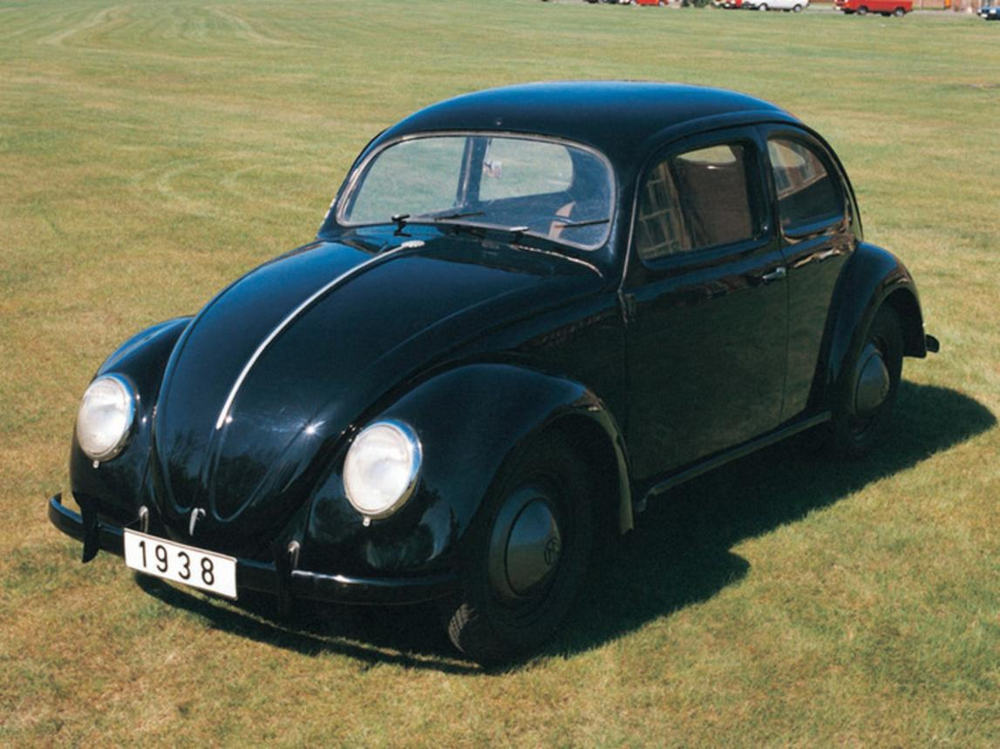
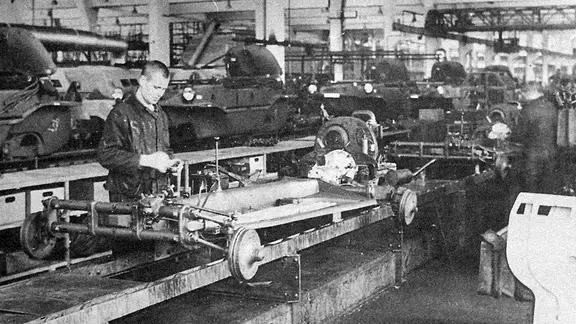
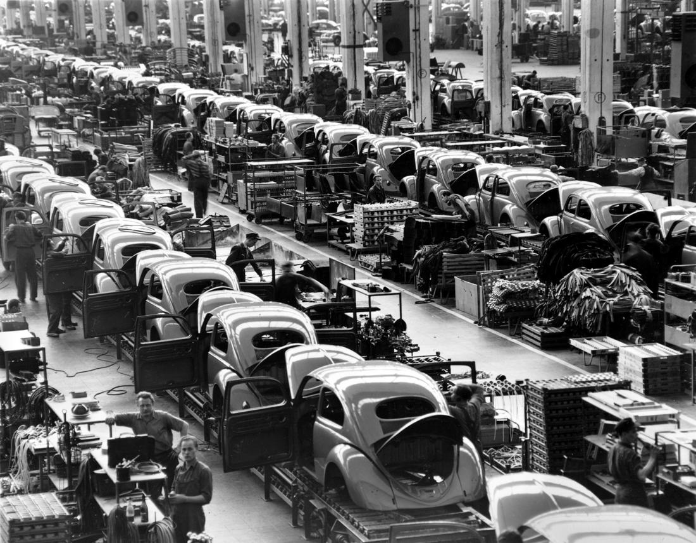
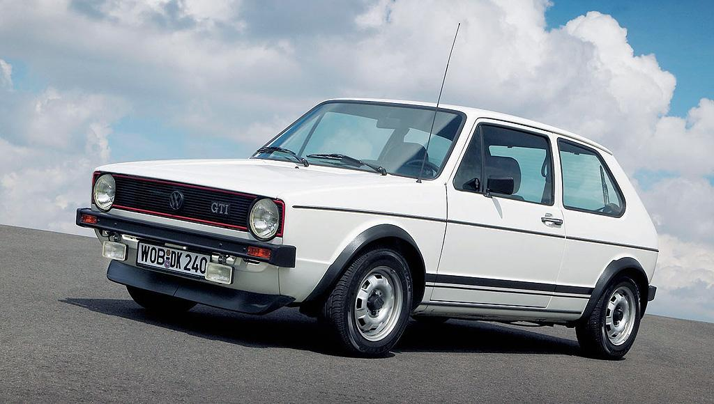
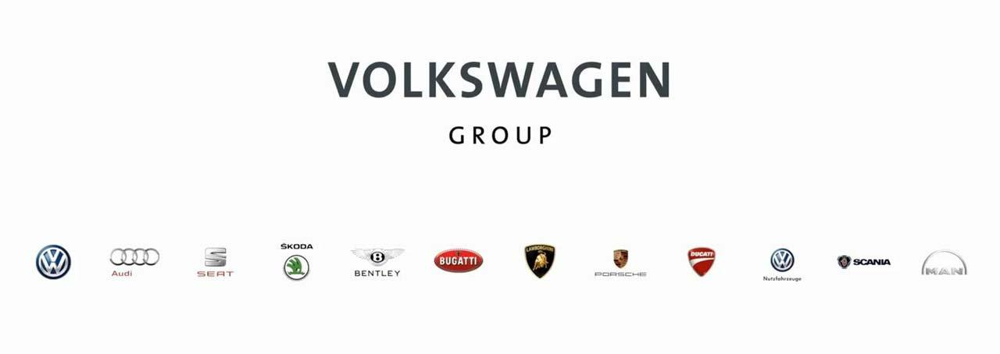
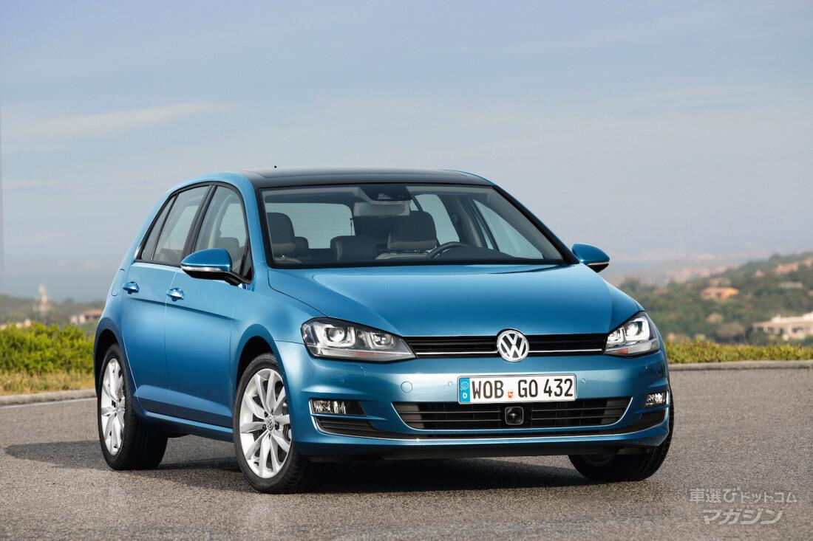
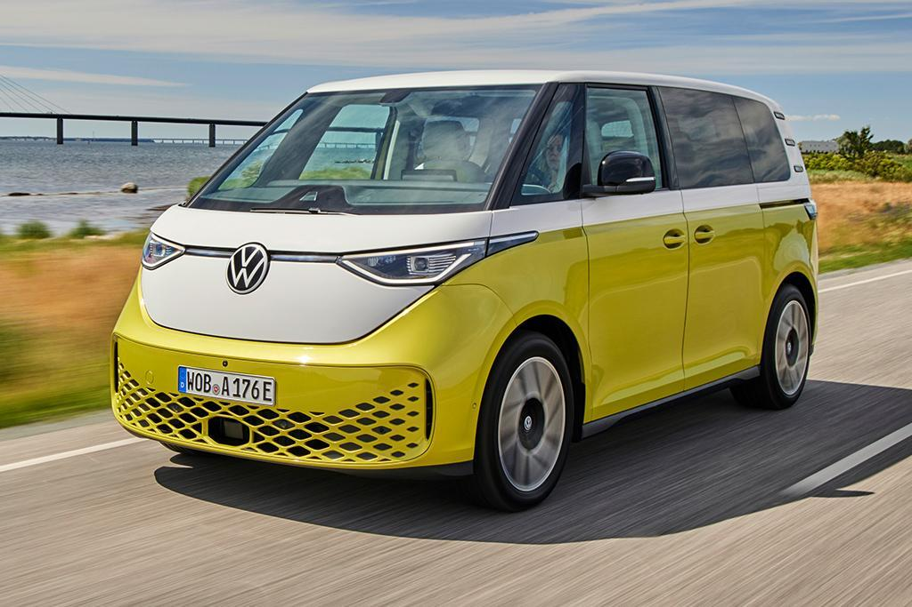
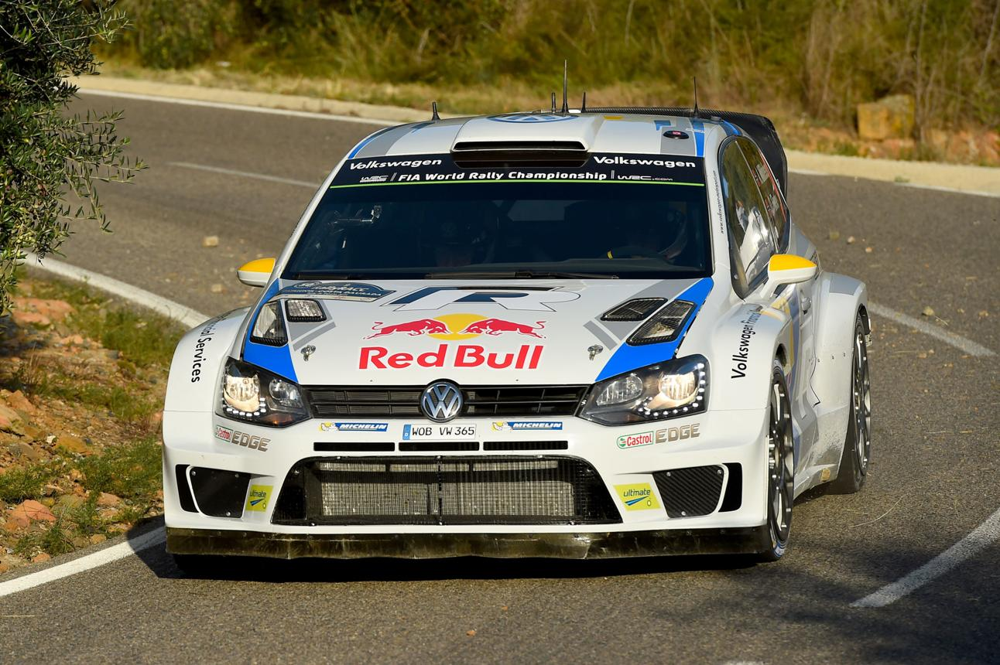
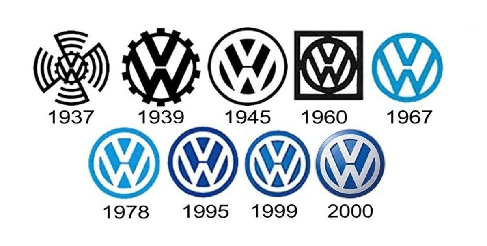

Ferdinand Porsche est chargé, dans les années 1930, de concevoir une voiture simple, fiable et abordable pour les familles allemandes. Le projet est soutenu par le gouvernement allemand de l'époque. En 1937, l'entreprise Volkswagen est officiellement créée. Son nom signifie « la voiture du peuple » en allemand. Une immense usine est construite à Wolfsburg pour produire cette nouvelle automobile.

En 1938, Volkswagen présente la voiture qui deviendra la plus célèbre de son histoire : la Coccinelle (Beetle). Elle est équipée d'un moteur placé à l'arrière, refroidi par air, ce qui la rend très fiable et facile à entretenir. La Seconde Guerre mondiale empêche toutefois sa production à grande échelle pour les particuliers.

Pendant la guerre, l'usine Volkswagen produit principalement des véhicules militaires comme la Kübelwagen et la Schwimmwagen. À la fin du conflit, l'usine de Wolfsburg est fortement endommagée. Les forces britanniques décident cependant de relancer la production afin de reconstruire l'industrie automobile allemande.

Après la guerre, la Coccinelle devient un immense succès dans le monde entier. Grâce à sa robustesse, son faible coût d'entretien et sa simplicité mécanique, elle séduit des millions de conducteurs. Dans les années 1960, elle devient l'une des voitures les plus vendues au monde et un symbole de la culture populaire.

Dans les années 1970, Volkswagen doit remplacer la Coccinelle. En 1974, la marque lance la Golf, une compacte moderne à moteur avant et traction avant. Elle rencontre un immense succès et devient rapidement le modèle le plus important de Volkswagen. Durant cette période apparaissent également :
Ces modèles permettent à Volkswagen de devenir l'un des plus grands constructeurs automobiles au monde.

Au fil des années, Volkswagen rachète plusieurs constructeurs prestigieux. Le groupe possède aujourd'hui notamment :
Le groupe Volkswagen est aujourd'hui l'un des plus grands constructeurs automobiles mondiaux.

Au début des années 2000, Volkswagen connaît un grand succès grâce à des modèles comme la Golf, la Passat et le Tiguan. En 2015, l'entreprise est touchée par le Dieselgate : il est découvert que certains moteurs diesel étaient équipés d'un logiciel capable de fausser les tests d'émissions polluantes. Ce scandale entraîne de lourdes amendes, des rappels de véhicules et pousse Volkswagen à accélérer son développement dans les véhicules électriques.

Aujourd'hui, Volkswagen investit massivement dans l'électrification. Les principaux modèles récents sont :
Le groupe développe également des batteries, des logiciels et des technologies de conduite autonome.

Volkswagen possède un important palmarès sportif. La marque remporte plusieurs titres en Championnat du monde des rallyes (WRC) avec la Polo R WRC. Elle établit également plusieurs records avec la voiture électrique ID.R, notamment lors de la célèbre montée de Pikes Peak. Volkswagen participe aussi à plusieurs éditions du Rallye Dakar.

